🔐 Microsoft Entra ID Environment
For this project, I built and configured a test environment using Microsoft Entra ID. This
provided hands-on experience adding and managing users through both the Azure Portal and
command-line tools. This tenant was designed to enforce least-privileged access by designing
and implementing custom roles and policies to enhance security.
- Created users with specified roles
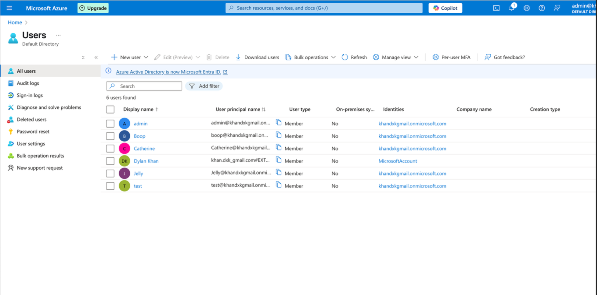
- Assigned roles to users
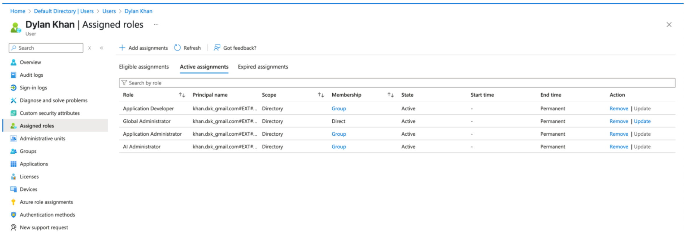
- Created conditional access policies such as Block legacy authentication and Enforcing MFA
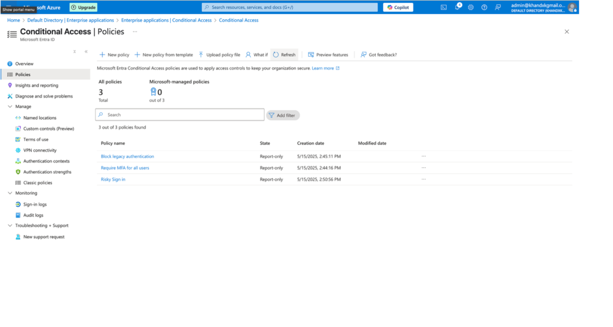
- Enforce monthly access reviews for users
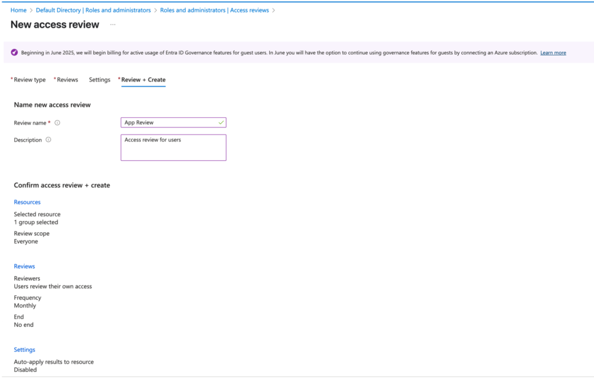
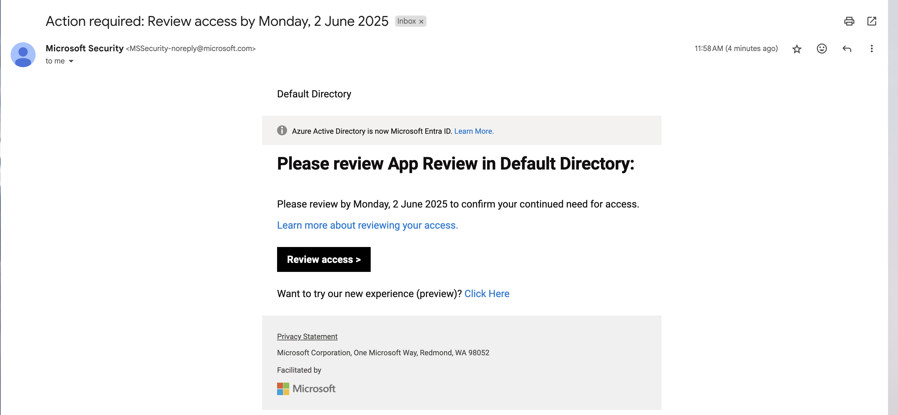
- Review Audit logs of password resets, user updates, user invites, and role assignments
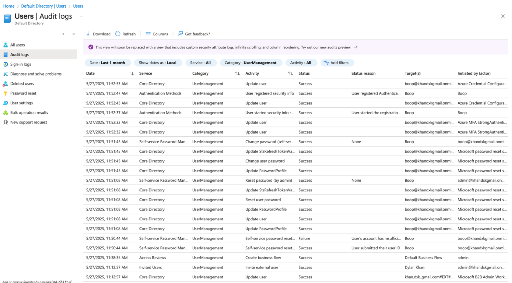
- Automated user add using terminal on MacOS
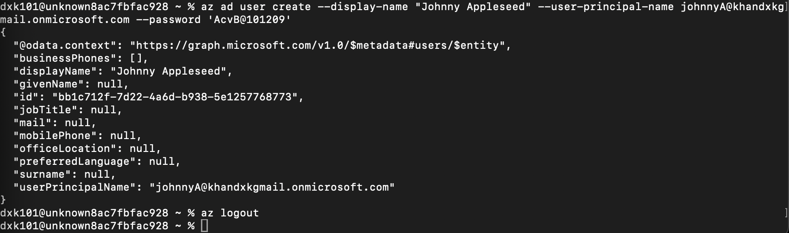
- Personal Theme for test environment
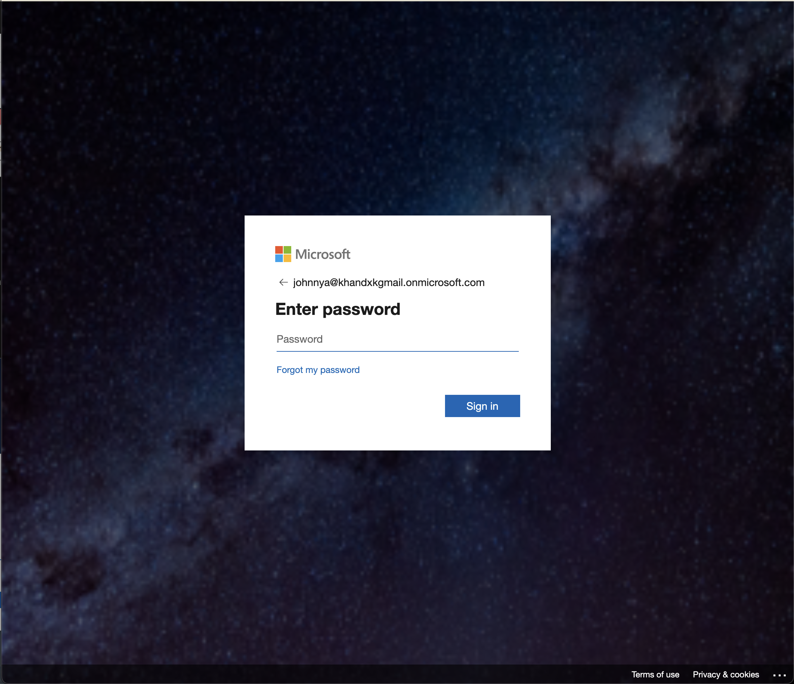
Through this project, I've learned:
-
User and Group Management: Learned to create, manage, and organize users and groups
effectively with setting user attributes, assigning users to groups, and managing group
access
-
Role-Based Access Control (RBAC): Understanding how to assign built-in and custom roles to
users to grant least-privilege access
-
Conditional Access Policies: How to create and test conditional access policies to enforce
security requirements like multi-factor authentication (MFA)
- Azure CLI on macOS Terminal: Learned how to use Azure CLI to manage and add users programmatically
🖥️ Azure Virtual Machine Labs
In this project, I utilized Microsoft Azure to create a virtual machine (VM) and installed
T-Pot, an open-source honeypot platform. A honeypot is a security tool designed to attract,
detect, and analyze malicious activity through the simulation of vulnerable services.
- Created Ubuntu VM for honeypot
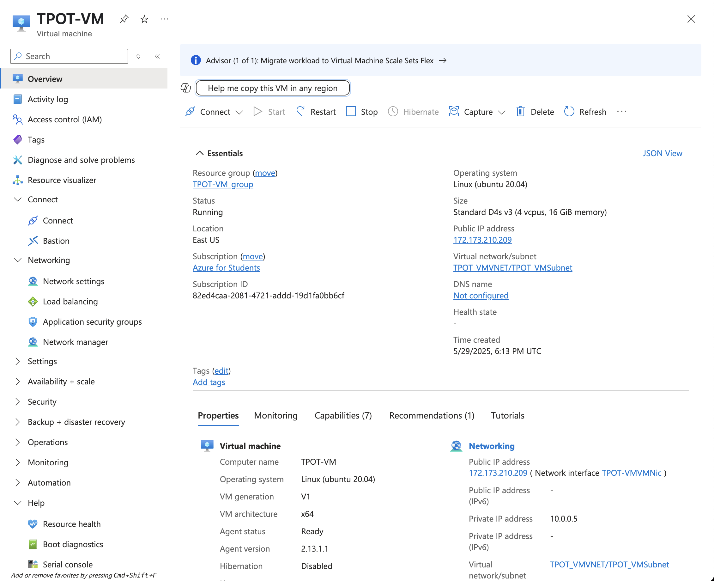
- Installed tpotce via git clone
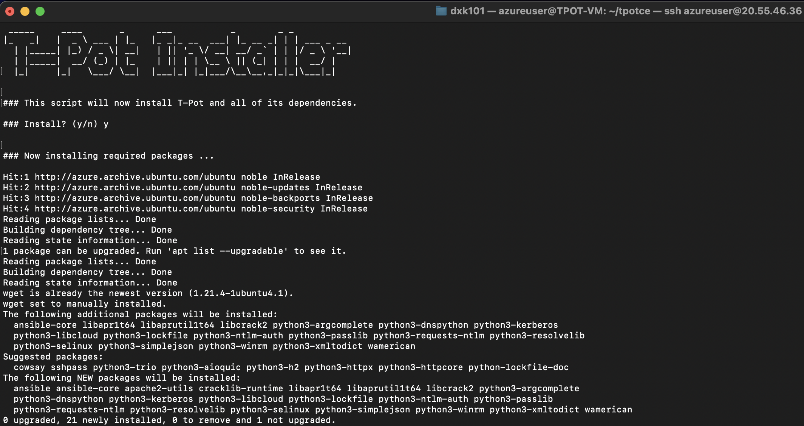
- Set inbound network rules to allow tpotce connection
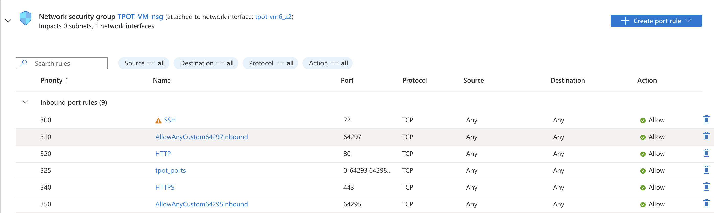
- Opening page when loading into vm ip address at port 64297
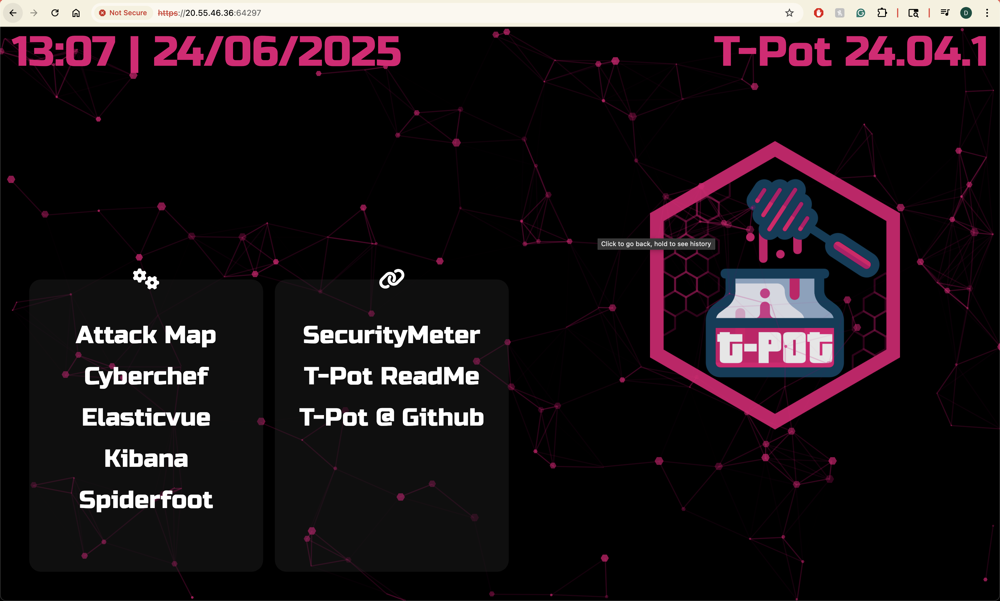
- Kibana user interface to analyze honeypots and locations
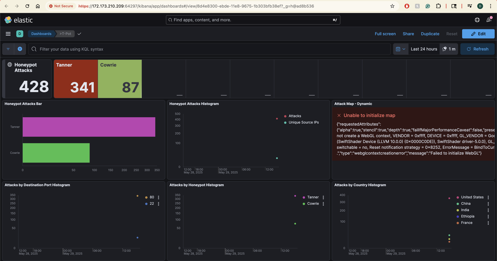
- Spiderfoot to view my digital footprint and compromised accounts
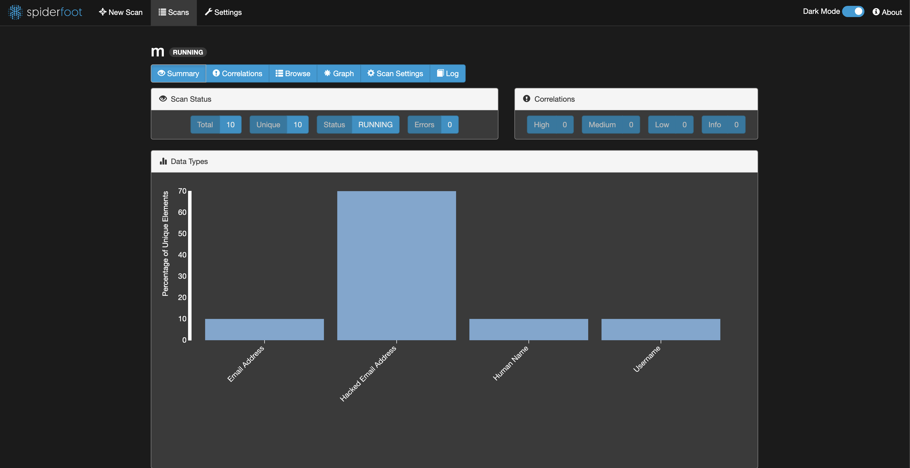
Through this project, I've learned:
- How to create and configure virtual machines using Azure CLI
- Port management and securing access with firewall and Network Security Groups (NSGs)
- Linux system administration, including package management and troubleshooting
- Deployment and configuration of honeypot technologies to detect and analyze cyber threats
- Security monitoring and analytics using ELK stack tools like Kibana for visualizing attack data
🖥️ Microsoft Modern Work Copilot Agent
In this project, I collaborated with the Modern Work team and utilized SharePoint and Copilot Studio to build an AI chatbot tailored to Modern Work use cases.
- Created starter prompts and agent instructions
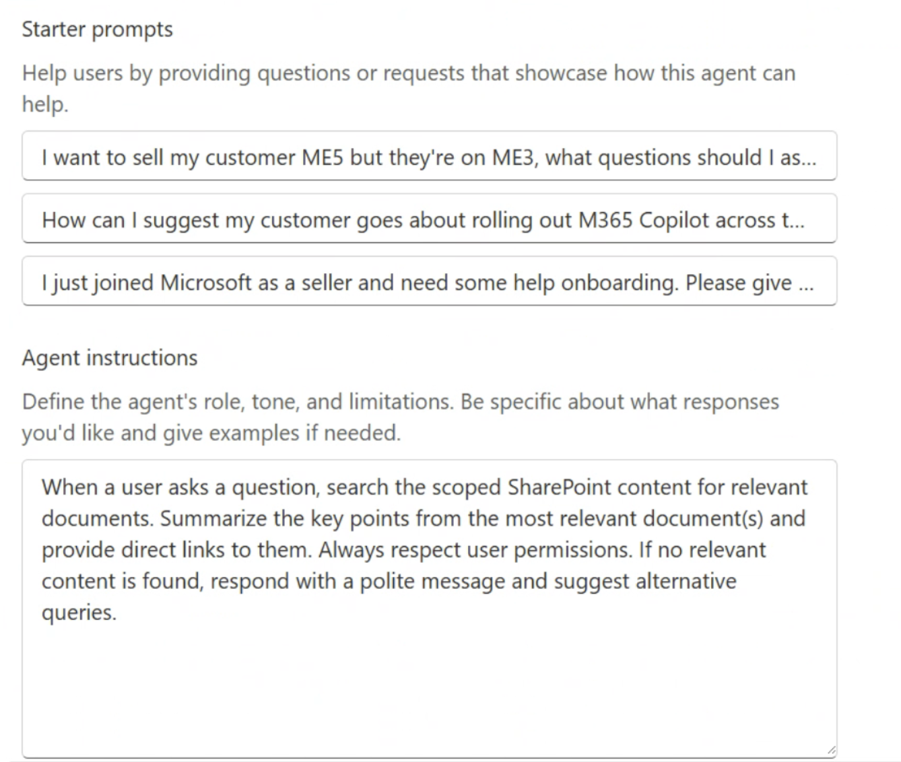
- Edited the agent’s purpose and connected it to a SharePoint-based knowledge base
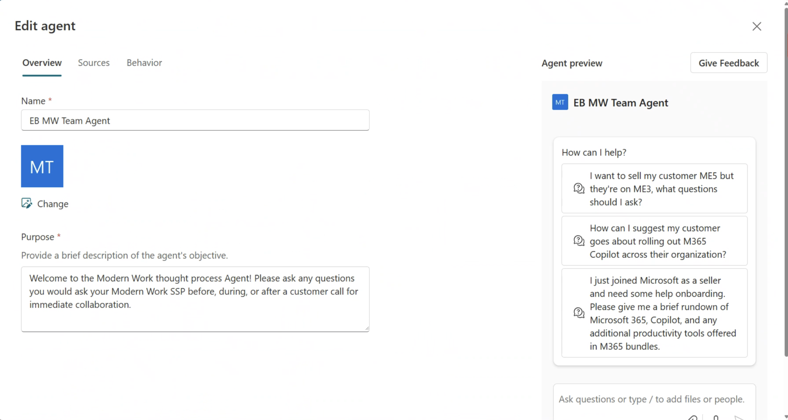
- Deployed the final AI agent for internal use via Microsoft Teams
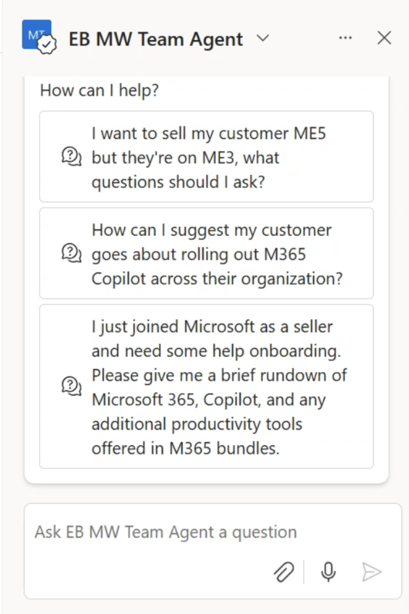
Through this project, I've learned:
- How to design prompt flows and guide AI behavior in SharePoint
- Integrating and sourcing SharePoint libraries as dynamic knowledge bases
- Configuring AI agent roles, access controls, and deployment within Microsoft Teams
- Collaborating with cross-functional teams to support internal Microsoft use cases
- Testing and refining chatbot performance based on user needs and feedback
Want to learn how to build your own SharePoint agent?